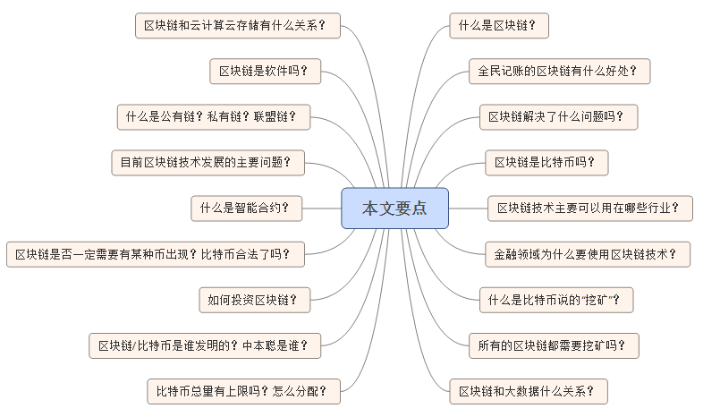

相关技术点

问：什么是区块链？
答：区块链（Blockchain）是指通过去中心化和去信任的方式集体维护一个可靠数据库的技术方案。通俗一点说，区块链技术就指一种全民参与记账的方式。所有的系统背后都有一个数据库，你可以把数据库看成是就是一个大账本。那么谁来记这个账本就变得很重要。目前就是谁的系统谁来记账，微信的账本就是腾讯在记，淘宝的账本就是阿里在记。但现在区块链系统中，系统中的每个人都可以有机会参与记账。在一定时间段内如果有任何数据变化，系统中每个人都可以来进行记账，系统会评判这段时间内记账最快最好的人，把他记录的内容写到账本，并将这段时间内账本内容发给系统内所有的其他人进行备份。这样系统中的每个人都了一本完整的账本。这种方式，我们就称它为区块链技术。
问：这样全民记账的区块链有什么好处？
答：可以发现，这是在牺牲一点效率的情况下，获得了极大的安全性。首先没有一本中央大账本了，所以无法摧毁。每个节点都仅仅是系统的一部分，每个节点权利相等，都有着一模一样的账本。摧毁部分节点对系统一点都没有影响。其次，无法作弊，因为除非你能控制系统内大多数人的电脑都进行修改，否则系统会参照多数人的意见来决定什么才是真实结果，结果会发现修改自己的账本完全没有意义（因为别人不承认）。其次，由于没有中心化的中介机构存在，让所有的东西都通过预先设定的程序自动运行，不仅能够大大降低成本，也能提高效率。而由于每个人都有相同的账本，能确保账本记录过程是公开透明的。
问：区块链解决了什么问题吗？
答：区块链最重要的是解决了中介信用问题。在过去，两个互不认识和信任的人要达成协作是难的，必须要依靠第三方。比如支付行为，在过去任何一种转账，必须要有银行或者支付宝这样的机构存在。但是通过区块链技术，比特币是人类第一次实现在没有任何中介机构参与的情况下，完成双方可以互信的转账行为。这是区块链的重大突破。
问：区块链是比特币吗？或者比特币就是区块链吗？
答：区块链技术是比特币的底层技术，在早期并没有太多人注意到比特币的底层技术。但是当比特币在没有任何中心化机构运营和管理的情况下，在多年里非常稳定的运行，并且没有出现过任何问题。所以很多人注意到，该底层技术技术也许有很大的机制，而且不仅仅可以在比特币中使用，也许可以在许多领域都能够应用这种技术。于是把比特币技术抽象提取出来，称之为区块链技术，或者分布式账本技术。所以从某个角度来看，比特币可以看成是区块链第一个应用，而区块链更类似于TCP/IP这样的底层技术，以后会扩展到越来越多的行业中。
问：区块链技术主要可以用在哪些行业？
答：区块链主要的优势是无需中介参与、过程高效透明且成本很低、数据高度安全。所以如果在这三个方面有任意一个需求的行业都有机会使用区块链技术。
问：金融领域为什么要使用区块链技术？有什么实质性的好处？
答：区块链技术在金融领域中主要的优势去中介化和极大的降低成本。
首先金融行业目前由于防止单点故障和系统性风险，需要进行层层审计来控制金融风险，但由此也造成高昂的内部成本。并且由于不断增加的监管法规出现，特别是2008年金融危机导致对于金融管控门槛不断升高，而反恐战争导致反洗钱和反恐怖主义融资的范围也让监管的广度和深度逐渐扩大，导致整个金融系统的监管成本急剧增加。在这种情况下，区块链技术能够通过防篡改和高透明的方式让真个金融系统极大的降低成本。根据西班牙最大银行桑坦德发布的一份报告显示，2020年左右如果全世界的银行内部都使用区块链技术的话，大概每年能省下200亿美元的成本。这样的数据足以说明"区块链"给传统金融领域带来的巨大变革和突破。
此外由于历史原因，导致传统金融机构在结算和清算时都依靠中央结算所来完成，而由此造成的问题就是效率低下。传统的跨国结算就是因为要通过类似于SWIFT这样的机构，所以跨国电汇往往是按天来计算的。但是比特币在使用区块链技术时，在完全没有中心化运营机构的情况下，完美的运行了七年，不仅能够实现实时结算和清算，而且没有出现过任何一笔账目错误。所以，如果所有的金融系统能够实现去中心化的实时结算和清算，不仅仅将极大的提高全球金融效率，并且由此能够改变全球金融的格局。
问：什么是比特币说的"挖矿"？
答：比特币中的"挖矿"实际上就是记账的过程，比特币的运算采用了一种称为"工作量证明（Proof of Work，PoW）"的机制，系统为了找出谁有更强大的计算能力，每次会出一道数学题，只有最快解出这道题目的计算机才能进行记账。而抢到记账权的计算机会获得25个比特币的奖励。通常把这个行为称为"挖矿"，把获得的比特币视为挖矿成功获得的奖励。
问：所有的区块链都需要挖矿吗？
答：并非所有的区块链项目都会采用类似于比特币这样的"工作量证明"方式，这更多出现在早期的区块链项目中。如果采取其他的证明机制，如"权益证明（Proof of Stake，PoS）"、"股份授权证明机制（DPoS，Delegate Proof of Stake）"都是不需要采取这样的挖矿方式。
问：区块链和大数据什么关系？区块链会取代大数据？
答：区块链和大数据关系并不是很大。大数据主要的是对于海量数据进行管理，而区块链的核心是在没有中心化中介计入的情况下实现数据的高安全性和高可靠性。所以区块链和大数据并不互相冲突，也不会取代，完全是面对不同场景情况下对于数据的不同解决方案。
问：区块链和云计算云存储有什么关系？区块链是云计算或云存储吗？
答：云计算通常定义为通过互联网来提供动态易扩展且经常是虚拟化的资源，但是提供云计算平台的往往是一个中心化机构。而区块链组成的网络一般是没有特定的机构，所以区块链更接近分布式计算系统的定义，属于分布式计算的一种。不过，区块链是能够实现云存储的，不同于目前中心化提供云存储空间，区块链有一些提供去中心化的云存储方案。这样的项目包括Storj，Sia，Maidsafe。
问：区块链是软件吗？是用什么程序写的？
答：区块链不是一种特定的软件，就像"数据库"这个三个字表现的意思一样，它是一种特定技术的设计思想。可以用绝大多数语言来实现它，而且实现的方式也有许多种。而且区块链技术目前还在快速发展中，相对而言，目前区块链技术设计思想还是比较简单的，也许在未来会变得愈加复杂。
问：什么是公有链？什么是私有链？什么是联盟链？
答：公有链是任何节点都是向任何人开放的，每个人都可以参与到这个区块链中参与计算，而且任何人都可以下载获得完整区块链数据（全部账本）。但是有些区块链的应用场景下，并不希望这个系统任何人都可以参与，任何人都可以查看所有数据，只有被许可的节点才可以参与并且查看所有数据。那么这种区块链结构我们称为私有链。
联盟链是指参与每个节点的权限都完全对等，大家在不需要完全互信的情况下就可以实现数据的可信交换，R3组成的银行区块链联盟要构建的就是典型的联盟链。
但是随着区块链技术的快速发展，不排除以后公有链和私有链的界限会变得比较模糊。因为每个节点的可以有较为复杂的读写权限，也许有部分权限的节点会向所有人开发，而部分记账或者核心权限的节点只能向许可的节点开放，那就会不再是纯粹的公有链或者私有链。
问：目前区块链技术发展的主要问题？
答：目前区块链技术还处于一个非常早期的阶段，不仅尚未形成统一的技术标准，而且各种技术方案还在快速发展中。但是过去被认为基于区块链技术的系统会非常耗费资源（类似于比特币），或者区块链技术的系统处理数据有限制之类的问题已经在技术上获得了突破。但是，对于区块链技术的可扩展性，还没有经过大规模的实践考验，而现在主要还停留在原型设计阶段。
如果不能定量分析，使用区块链技术能够为我们带来的实际好处，包括能够节省的资金和创造的价值，那么金融行业短期内还会保持相对谨慎的态度。毕竟，目前全球金融的基础设施投入已经超过数万亿，要建立一套全新的金融架构和底层操作体系是需要有实际数据相支撑的。在现有技术还没有被部署并且获得使用案例的情况下，能节省下的总金额还是很难确定的。这到目前为止，还是一个巨大的疑问存在，就是到底需要多少资金才能建立一个足够强大的区块链来平台处理，资本市场生态系统每天需要面对的万亿数量级的美元。
此外区块链行业极其缺乏人才，缺少大量既了解区块链技术，又了解金融的多方面人才，市场正在拼命寻找可以连接两个世界的人才，需要能够在现实世界中，将区块链技术能够在资本市场中实现，并且实现更好的功能。而需要建立基于区块链技术的全新系统，必然是需要这样的跨界人才。
问：什么是智能合约？
答：智能合约是一种用计算机语言取代法律语言去记录条款的合约。智能合约可以由一个计算系统自动执行。如果区块链是一个数据库，智能合约就是能够使区块链技术应用到现实当中的应用层。传统意义上的合同一般与执行合同内容的计算机代码没有直接联系。纸质合同在大多数情况下是被存档的，而软件会执行用计算机代码形式编写的合同条款。智能合约的潜在好处包括降低签订合约、执行和监管方面的成本；因此，对很多低价值交易相关的合约来说，这是极大降低人力成本。
问：智能合约怎么用？
答：央行如果能够通过区块链来发行法币，那么也可以通过智能合约技术，将代码嵌入到法币发行的行为中，则这部分法币可以被称为"可编程货币"。比如，如果央行指定某一部分资金是发放到农业相关的账户，那么则可以对这部分资金写入相应程序，指定该部分资金只能进入到农业相关的账户中，那么这部分资金在任何情况下也不可能会被挪用到其他的账户中。如果大部分货币都成为"可编程货币"，那么我们则可以想象到，他们组成的金融环境就变成了"可编程金融"。
问：区块链和普通人有什么关系？
答：基本上没什么关系，除非是准备从事这方面的创业。就和TCP/IP协议和普通人之间的关系，普通人完全不需要知道什么是互联网底层的TCP/IP协议，只要享受互联网提供的服务就行。
问：区块链项目是否一定需要有某种币出现？
答：不是。比特币本身是作为一种支付系统，所以它需要有一个价值度量的工具，所以必须要有bitcoin出现。此外，为了奖励有更多人愿意贡献自己的计算机来为系统提供计算，所以需要有bitcoin来进行奖励。而在一些私有链的系统，可以设计专门的资产进行交易，而每个节点都是必须参与计算，这是他们的责任也是他们的权利，所以不用考虑通过奖励的方式来鼓励他们参与，所以在这样的系统里面就可能不再需要设计某种币的存在。
问：比特币现在合法了吗？
答：比特币在主要的世界大国，包括中国在内一直都是完全合法的。由于某些不良媒体的误导，使很多人以为中国曾经宣布过比特币非法。事实上，根据2013年12月5日，中国人民银行等五部委发布的防范比特币风险的通知中明确规定，比特币是一种特定虚拟商品，普通民众在自担风险的前提下拥有参与的自由。而各类金融机构和支付机构不得开展比特币相关的金融服务，或者将比特币作为投资标的。比特币在德国作为货币单位，在美国定义为大宗商品。欧盟法院认为比特币为一种支付手段，无需征收增值税。
问：XX币可以投资吗？是区块链项目吗？是传销吗？
答：目前包括比特币在内的所有数字货币都具有很高的风险，区块链技术本身在刚刚起步阶段，所有的区块链项目也都具有非常高的风险。不建议任何普通人投资任何数字货币和区块链相关的项目。并且数字货币和区块链具有一定的技术门槛，普通人无法区分哪些是真实的项目，哪些是传销项目。所以普通人建议不要投资任何这类的项目。对于任何你无法分辨是否是传销的项目，请直接视为传销项目。
问：如何投资区块链？
答：大多数区块链都处于起步阶段，而主要都是在海外，国内好的区块链项目非常非常少，所以不建议任何非专业人士投资区块链项目。如果对区块链技术很有兴趣，自己有技术或者金融相关的背景，建议可以考虑在这方面进行创业。
问：区块链/比特币到底是谁发明的？中本聪是不是日本人？是不是美国政府的阴谋？
答：比特币是一个自称为"中本聪"的人或者团队创造的，并且在比特币项目初期就已经完全退出了这个项目。"中本聪"是日本人的可能性非常小，因为他过去的电子邮件中可以推测出，他应该是一个以英语为母语的人。此外比特币创造者对于目前比特币的项目已经完全没有影响力，所以不太可能是某个阴谋的产物。无论"中本聪"在之后是否会出现，或者在肉体上被消灭都无法影响对比特币产生太多的影响。
问：比特币和Q币到底有什么区别？
答：Q币是一种中心化的电子货币，包括总量，发行方式都是由腾讯公司控制的。而比特币的总量，发行方式都是由程序和加密算法预先设定后，在全世界的多个节点上运行，没有任何人和机构可以修改，不受任何单一人或者机构来控制。一般称Q币为电子货币，或者企业代币。称比特币为数字货币或者加密数字货币。
问：比特币总量是有上限的吗？是怎么分配的？
答：如同前面所说，矿工参与争夺记账权是有机会获得奖励的。在开始的时候是每10分钟系统会奖励记账最快最好的人50个比特币，然后这50个每四年减半，差不多在2140年的时候就不再有新的比特币出现，将会达到2100万个的上限。在这之后，将会使用交易手续费来奖励矿工。
原文地址：https://yq.aliyun.com/articles/60134